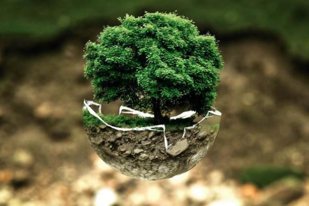
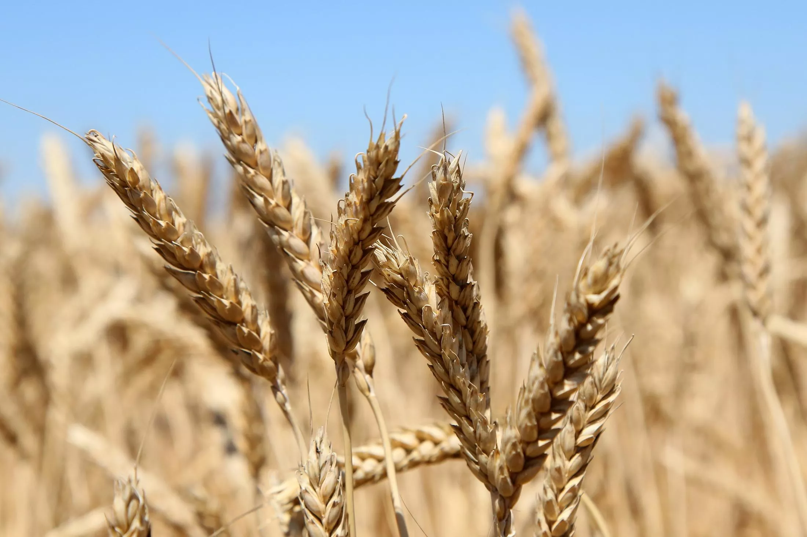

Веганство способствует сохранению природного баланса
Вследствие распространения животноводства, произошел неестественный перекос в сторону численности домашних животных. Под развитие животноводства осваиваются новые территории, сокращается количество лесов, меняется состав атмосферы, загрязняется почва, итог — нарушаются существующие экосистемы и природный баланс на планете. По предварительным выводам ученых, действия человека привели к шестому массовому вымиранию диких животных. Все говорит о необходимости радикального изменения образа жизни всех людей нашей планеты.

Водные затраты на производство пищи
1 кг пшеницы = 1300 л воды, 1 кг мяса = от 4000 (козлятина, курятина) до 15 500 (говядина) литров. Для сравнения: расход воды человеком = 100 — 250 литров в день. На 70% всех обрабатываемых земель царит засуха. При этом в нетронутых степях содержание влаги в почве в 1,5 — 3 раза больше, чем в пашне.

Вырубка лесов для животноводства
«Каждый человек, ставший вегетарианцем, спасает от вырубки почти половину гектара леса в год.» — Джордж Харрисон, «экс — битл». На сегодняшний день в мире живет 7,1 млрд человек, можно себе представить сколько ежегодно вырубается лесов.